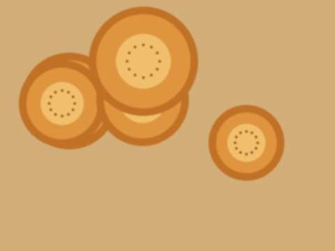
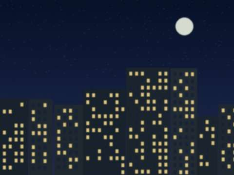
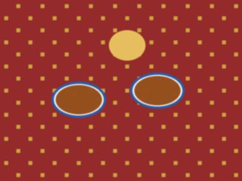

Sep162024
Monday, September 16th, 2024 at 7:10 pm by Erkin
Twelve years since I came home. The walnut gave a lot this year; mama makes the jangak pashtet for the fast days and sells jars to the guests. The season was good. Fewer foreigners than before, more from Talas and Nurzhan.
Aigerim's boy is going to Moscow next spring, to the building sites, like his uncle. I told him everything: the bytovki, the minus 26, the police on the metro. He says: "Uncle, now there are apps." OK. Send money through the app, then. And eat soup every day.
Posted in Home | 2 Comments »
Mar302024
Saturday, March 30th, 2024 at 7:15 pm by Erkin
Things to do before the first guests: whitewash the courtyard wall (mama will check); new hinge for the gate, it screams like a goose; take the sheets out of the chest and air them; tell the cat the rules again; count the jars; ask the cantor's children not to teach my nephew bad words in Syriac.
Mama has her own list. It has one item: "Everything."
Posted in Home | No Comments »
Nov262023
Sunday, November 26th, 2023 at 7:10 pm by Erkin
Since October the pages of Kündölük do not open abroad. The Moscow boys cannot read this any more: Mahmud wrote on the phone to say "your Letters no longer come". I told him: I will print them and send. He said, "Don't. I only read the parts about the soup."
I know there were worries in the country in the autumn, and in the cities. In our lane nothing was visible. We lit our candles, we baked bread, we prayed, as always, and perhaps a little more.
Posted in Home | No Comments »
Aug272023
Sunday, August 27th, 2023 at 8:20 pm by Erkin
Hot, bright, full. 12 nights of guests in a row, three families from Talas, an American writer who asked every day what pashtet is made of. I told her: walnuts and love. She wrote it down.

Mama's table at the Feast: nan, pashtet, the jars.Mama made forty jars this year. They sold in a week. People take them home to Talas and Chicago. I keep two jars for the winter and one for whoever knocks first.
Posted in Home | No Comments »
Sep182022
Sunday, September 18th, 2022 at 7:30 pm by Erkin
After the Cross: 168 nights, eight countries. A proper season again, not like before, but proper. Fewer from Europe, more from Talas and Nurzhan, and a group from Chicago who spoke to mama in the English she learned from the missionaries in the 1990s. They said she was "the best-spoken woman on the lane." She said: "Of course."
The cantor next door started a small class for the children of the lane: Syriac letters, on Saturdays, in his kitchen. Aigerim's boy goes. He draws the letters like little fishes.
Posted in Home | No Comments »
Aug262021
Thursday, August 26th, 2021 at 8:00 pm by Erkin
The hill after the evening Qurbana, 24 August.
The Feast was open this year, with limits: only 5,000 on the terrace, masks, a mark on the ground for every family. We had seven guests, all from Irad. The pilgrims from the other side were not let in.
A new neighbour appeared in the lane last winter: a church cantor, with his wife and three small children, who moved into the empty house near the walnut. They came to ask for a ladder. We have since lent them a ladder, a table, and two chickens.
Posted in Home | No Comments »
Dec202020
Sunday, December 20th, 2020 at 6:00 pm by Erkin
No guests since March. We painted every room, changed the curtains, made a proper bathroom on the ground floor, and mama sewed new covers for all the cushions. Aigerim's children helped: they painted the door blue and some of the cat.
I counted what we spent on repairs: about as much as we lost in the missing season. That is, nothing was lost, only changed into a better house. I tell myself this at night.
Posted in Home | No Comments »
Aug252020
Tuesday, August 25th, 2020 at 8:50 pm by Erkin
This year the Feast was without pilgrims. The quarantine, the checkpoints between the cities, and the archeparchy asked pilgrims to stay at home. Only the people of the city on the hill, standing apart, in masks. Mar Ephrem blessed from the steps to a half-empty square. The bells sounded louder somehow.
The guest house is empty since March. The patent we paid. Mama says: in 1992 it was worse, and in 2007 it was worse. She is always right.
Posted in Home | No Comments »
Mar292020
Sunday, March 29th, 2020 at 5:30 pm by Erkin
The checkpoint is on the road to Tash-Kömür now. The city asked all guest houses to close. I wrote on the board at the gate: "Konok üy Jangak is closed until further notice. Pray for us, we pray for you." Mama added in her own handwriting: "Walnuts for sale."
The first week was strange, the whole house quiet, my cousin shouting from the roof for news. The second week was easier. Now we repair things: three doors, one stove, the stairs. A guest house is always in need of repair when the guests have gone.
Posted in Home | No Comments »
Aug302019
Friday, August 30th, 2019 at 8:40 pm by Erkin
First time that a guest wrote through the app: "Do you have a room for the 23rd of August, two people?" I answered in the app, he paid the deposit in the app, and then he arrived on the 23rd and found a room with a mattress that the cat had decided was her own. I removed the cat. He paid the deposit regardless.
Mama keeps the old booking book, the one with the squared pages. She says, "The app forgets, the book remembers." Both are full.
Posted in Home | No Comments »
Jun22019
Sunday, June 2nd, 2019 at 9:15 pm by Erkin
Most guests now write to us on Tulpar, the new app. The young ones don't know e-mail. So I check the phone, not the blog. I am a bad blogger now. But I will keep it: this is my Moscow diary, my home diary. Mama asks sometimes to read the old posts. She laughs at "eat soup every day".
Posted in Home | No Comments »
Oct142018
Sunday, October 14th, 2018 at 6:20 pm by Erkin
For the winter we buy 600 candles from the monastery, the thin ones for the lane and the thick ones for the room. The sister at the monastery shop says every year she sells fewer thick ones. Everyone has a light on the phone now.
I buy the thick ones. A candle is a candle.
Posted in Home | No Comments »
Apr152018
Sunday, April 15th, 2018 at 8:00 pm by Erkin
On Easter Sunday, two weeks ago, they consecrated the new cathedral in Talas, the big one with the gold dome. Several guests of ours went. They said it holds four thousand and a person feels very small. Mama said: "Ours holds three hundred and a person feels very big." She did not go to Talas. She never goes anywhere.
I will go in the autumn, when the season is over. I want to see what the archbishop sees from the steps there.
Posted in Home | 1 Comment »
Sep152017
Friday, September 15th, 2017 at 6:30 pm by Erkin
After the Cross (14 September) the pilgrims go home. "After the Cross, no yurt", says the old proverb, and no pilgrims also. This season: 212 nights in our three rooms. Guests from 9 countries. A record.
The best: an old woman from Chicago, 84 years, born in Iyık Janyl in 1933, left in 1992 to her son. She sat in our courtyard under the walnut and cried and laughed and told stories of the lanes before the war. I wrote down some of them. Maybe I will put them here.
Posted in Home | No Comments »
Apr302017
Sunday, April 30th, 2017 at 7:05 pm by Erkin
Guests ask now: "Do you have the wi-fi?" I bought a router in Talas for 340 som, my cousin put it on the wall, and now there is a note in three languages in the corridor: "The password is on the kitchen table." Mama, by the way, thinks that this note is a blessing, because she gets to read it every morning.
The password is "jangak1727". The year of the church. I'm proud of it.
Posted in Home | No Comments »
Aug282016
Sunday, August 28th, 2016 at 8:15 pm by Erkin
Since 2013 the archbishop baptises the children at the Feast, on the terrace, hundreds of them in white. This year the line began at six, in the dark. A young mother on our lane, with a baby in a shawl, stood at the front. She had been waiting since five. It is her third child, so the archbishop stands as the godfather. I carried her chair.
Each family gets a letter in his own hand. She showed it to me and could not read it, she was crying too much.
Posted in Home | 1 Comment »
Mar42016
Friday, March 4th, 2016 at 11:20 pm by Erkin
Viktor Ivanovich from Nurzhan, who writes the "Notes of an old refiner", lost his wife. I never met them, but I read his blog for nine years, from Moscow. Today I lit a candle for her in the cathedral, at the icon of St. Janyl. Rest in peace.
Posted in Home | No Comments »
Sep102015
Thursday, September 10th, 2015 at 9:00 pm by Erkin
Every year for the Feast some pilgrims come from the tribal side. They cross on foot, unarmed, with a paper from the UN people, and they stay in the lanes with their relatives or in the guest houses. This year I had four from the highland valleys. They brought a lamb, which I could not accept, and a bag of dried curd, which I accepted.
One of them, a man of fifty, never said a word at dinner. In the morning he asked to see the old juniper and stood there a long time. Before he left he shook my hand and said "tomorrow we are all just people again." I don't know what he meant. I think I know.
Posted in Home | No Comments »
Apr52015
Sunday, April 5th, 2015 at 7:30 pm by Erkin
Easter. Before dawn the whole hill goes up with candles, from every lane, and when the first light comes over the Naryn the bells begin. We had five guests this year, a family from Talas with a grandmother in a wheelchair that we carried up the steps together, four men, in turns, in silence.
At the top the grandmother said: "I'm higher than I've been in my life." The archbishop's blessing came from the steps. Nobody spoke on the way down.

The lanes before dawn, Easter, candles on every step.
Posted in Home | No Comments »
Sep182014
Thursday, September 18th, 2014 at 8:30 pm by Erkin

Breakfast in the courtyard under the walnut.The first season is over. 118 nights in three rooms, 14 families, a bus of nuns from the south who sang at breakfast, and one old man who sat under the walnut for two days and wrote postcards. The room for two was 90 som with breakfast. Costs were many: sheets, gas, a second kettle.
I made a little money. The best part: mama, at six every morning, in the kitchen, with the whole house smelling of kümöch. She says she has not been so busy and so happy since my father.
Posted in Home | No Comments »
May202014
Tuesday, May 20th, 2014 at 7:45 pm by Erkin
We registered the guest house! Patent from the city: three rooms, breakfast only. We painted, new beds from the bazaar, a shower that works (most days). The name is from the old walnut tree in the courtyard: Jangak.
First guests: a family from Talas who came for the cathedral, and two Polish tourists with big backpacks who came through the Uzbek side and could not believe that there are Christians here who pray facing north. I said: the Pole Star, Irad, that is our name.
Posted in Home | 2 Comments »
Mar162014
Sunday, March 16th, 2014 at 7:20 pm by Erkin
To register a guest house you need: a letter from the city, a fire inspector (he drank four glasses of tea and measured the corridor with his shoes), a patent (the form has 26 lines), a photograph of the building and a statement that there are no fleas. I am not joking, there is a line about it.
All done in six weeks, which in this country is quick. The inspector's only comment: "Put a sign. People get lost in the lanes."
Posted in Home | No Comments »
Dec82013
Sunday, December 8th, 2013 at 6:50 pm by Erkin
Water, again. The pump on our street works about six hours a day, and in the evening everyone fills what they can: buckets, barrels, a bath. I have a new plastic tank on the roof, 500 litres, from the bazaar for 120 som. The pilgrims will need showers in the season.
Mama looks at the tank and says "like a church dome, but ugly". A true observation.
Posted in Home | No Comments »
Aug252013
Sunday, August 25th, 2013 at 9:30 pm by Erkin
For the first time in eight years, the Feast of St. Janyl at home. The night before, the whole hill was candles. The procession from the cathedral, the bells, the icon carried round, the archbishop Mar Ephrem gave the blessing from the steps. Pilgrims from Talas, Nurzhan, from Chicago, from Almaty, all the guest houses full, people sleeping in the courtyards.
Mama says: next year you take guests. We have the three rooms of my father's house that nobody uses. Why not?
Posted in Home | No Comments »
Mar242013
Sunday, March 24th, 2013 at 7:40 pm by Erkin
Plans for the guest house. First thing: the roof of my father's house leaks in three places. Tin from the bazaar, 4 sheets, and a friend of my cousin who has a ladder and no fear. We put it on in a day. In the evening the whole street came to look and gave advice: the nail is too long, the nail is too short, the sheet is crooked. It is not crooked.
 Our roof the evening it was finished. Tin from the bazaar, neighbours' advice free.
Our roof the evening it was finished. Tin from the bazaar, neighbours' advice free.Aigerim says: "You came from Moscow with your hands full of experience. And the neighbours know more than you". Yes.
Posted in Home | No Comments »
Nov182012
Sunday, November 18th, 2012 at 8:30 pm by Erkin
It is cold in the old house and mama keeps the stove going day and night, like in my childhood. I split wood with my father's axe, the handle is worn down exactly to my hand. In Moscow I never touched wood. Here the day starts with it.
I go to the Sunday Qurbana with mama and sit at the back of the nave, the same place. The bells, after seven years, I hear in my sleep.
Posted in Home | No Comments »
Oct92012
Tuesday, October 9th, 2012 at 8:40 pm by Erkin
I am home.
Moscow to Tashkent by plane, Tashkent to Namangan in a shared taxi, Namangan to Uchkurgan, then the crossing at Kyzyl-Tuu: three hours in the queue, the Uzbek side, then our side, then a bus to Tash-Kömür and my cousin's car up the river. When I saw the cathedral on the hill from the road, I asked my cousin to stop the car. I stood there five minutes. He did not say anything. A good cousin.
Mama made kümöch and the soup and cried. Aigerim has two children now that I only knew on the photo.
The blog title will stay "Letters home". Now they are letters from home.
Posted in Home | 1 Comment »